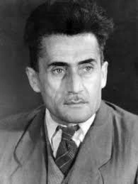

Niyazi Badalov

Niyazi Mustafa oglu Badalov (July 10, 1909, Nukha, Yelizavetpol province - November 2, 1997) - director of Azerbaijani documentaries. Niyazi Mustafa oglu Badalov was born on July 10, 1909 in Sheki. Niyazi Badalov, one of the first documentary film directors in Azerbaijan, studied at the All-Union State Institute of Cinematography in Moscow in 1931–1936 and was one of the first Azerbaijani graduates. Badalov was also a student of the great Russian director Sergei Eisenstein.